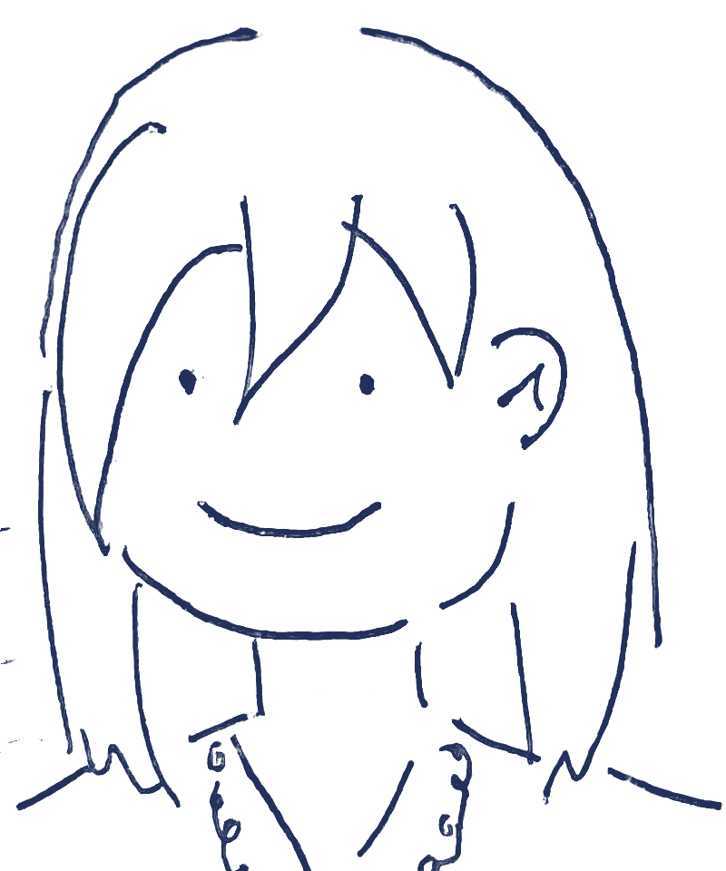

- Hi
- Calls
- Voice agent
- Workout
- Lyrics
- End

Alex
CHI 2024MARingBARingtones that play along with the song
UIST 2024Music-aware voice agentsMessages sung into the song
ISMIR 2025RISESongs rearranged around your workout
UIST 2026MultiVerseLyrics that adapt to each listener, steered by the artist
Now playingPlaylist
♪
Hotline Bling
Drake
Tap ▶ to play
Alex Wang2nd-year PhD studentHuman-Computer Interaction Institute, Carnegie Mellon University
alexanderwang@cmu.eduayw0.github.io ↗
An interactive story · 3 min · sound on 🔊
Music that listens back
Generative AI can now transform media at runtime. What if the music you are listening to adapted to what happens around you: a phone call, a voice agent, a workout?
Drag to look around the room · hover the speakers · Space to continue